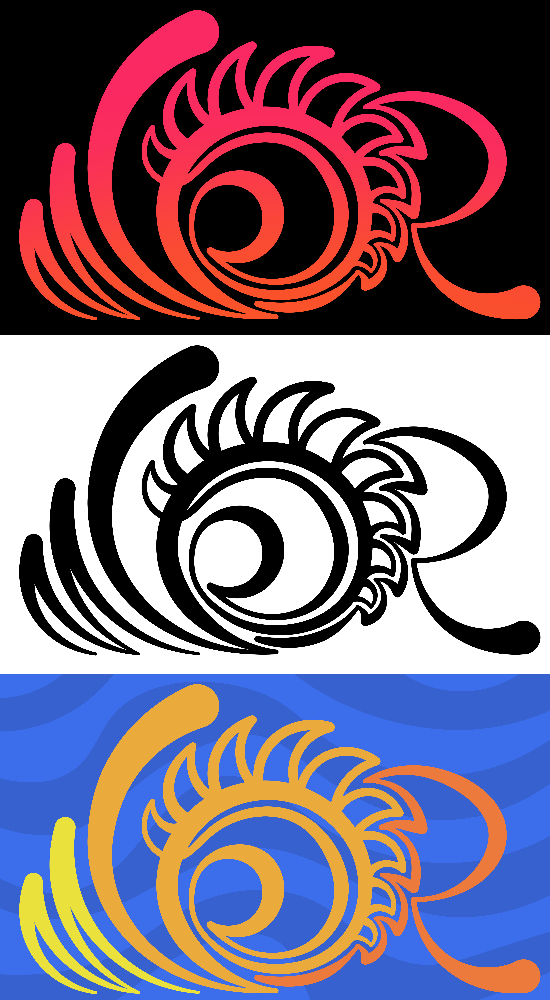
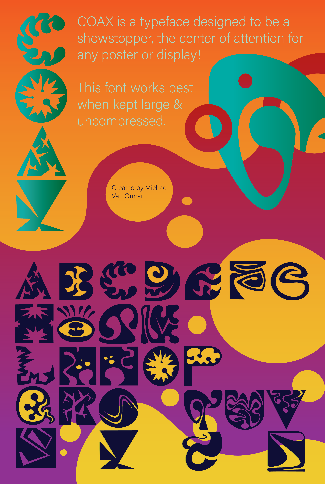

Typography
This course gave me a newfound appreciation for the text all around me!

This is a monogram I made based off my initials (MVOR). The O in the center is a combination of my star sign, leo, and a shining sun. This project had many iterations, with some of my dropped ideas including the symbol for the planet jupiter and my monogram in a monsters open mouth!
While I still like this monogram, I ultimetly decided to simplify it and create version 2. My personal favorite from the 3 colorations shown is the one with the sunset gradient!

This is my second pass at my own monogram. Whereas my first monogram was very complex, I chose to simplify this one and make it both more readable and more customizable.
You can see what I mean by customizable in the other versions, which let the unique colors really breathe. Overall I think both versions have value, but I believe that this one is a bit more presentable than the first iteration.

This poster and the typeface it showcases is the culmination of my work in typography so far! I really wanted a funky look with both orgnanic and geometric elements.
It took quite a bit of sketching, but I think the final result has a perfect blend of refinement and wild energy.
Back To the Homepage